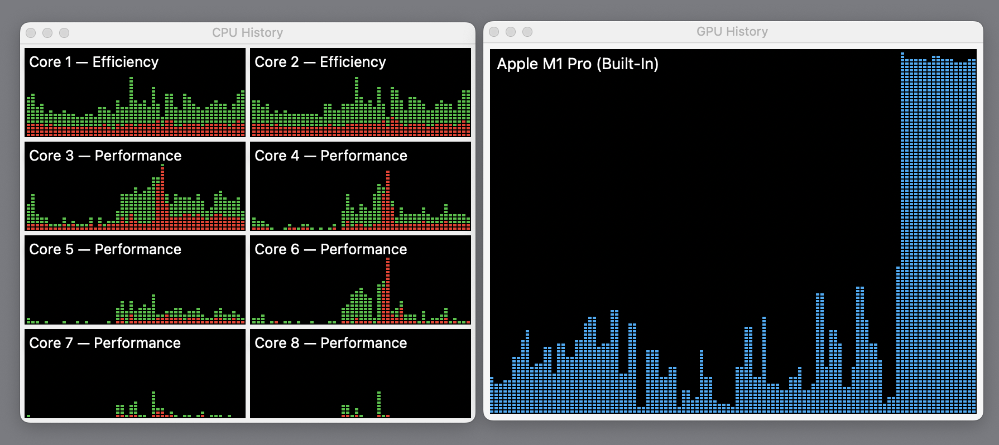
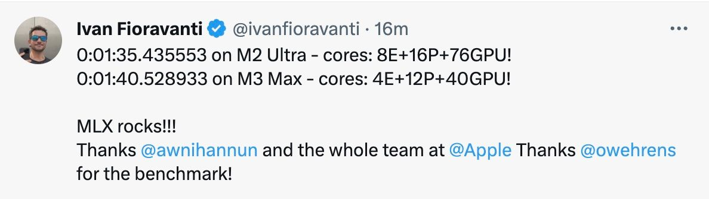

Whisper: Nvidia RTX 4090 vs M1Pro with MLX (updated with M2/M3)
(… see down below for M2 Ultra / M3 Max Update and a Nvidia optimzied whisper)
Apple released a machine learning framework for Apple Silicon. Along with that are some examples to see how things are working. They also use a whisper for benchmarking. So I dug out my benchmark and used that to measure performance.
I simply added a new file to the repo (and the whisper large model was already downloaded). See the original source dir.
import datetime
from pprint import pprint
from whisper import transcribe
if __name__ == '__main__':
audio_file = "whisper/assets/audio.wav"
start_time = datetime.datetime.now()
x = transcribe(audio=audio_file, model='large')
end_time = datetime.datetime.now()
pprint(x)
print(end_time - start_time)
It reports back a list of segements with the following structure:
{'avg_logprob': -0.18728541468714807,
'compression_ratio': 1.3786764705882353,
'end': 589.92,
'id': 139,
'no_speech_prob': 0.0017877654172480106,
'seek': 56892,
'start': 586.92,
'temperature': 0.0,
'text': ' Ich heiße Moses Fendel, danke fürs Zuhören und '
'tschüß.',
'tokens': [51264,
3141,
39124,
68,
17580,
479,
521,
338,
11,
46434,
46577,
1176,
3232,
26377,
674,
256,
6145,
774,
2536,
13,
51414]},
The structure is the same as I get with Python whisper on my RTX 4090.
The audio file is the same as in my other benchmarks with M1 and 4090.

Result
The result for a 10 Minute audio is 0:03:36.296329 (216 seconds). Compare that to 0:03:06.707770 (186 seconds) on my Nvidia 4090. The 2000 € GPU is still 30 seconds or ~ 16% faster. All graphics core where fully utilized during the run and I quit all programs, disabled desktop picture or similar for that run.
If I use an Nvidia optimized model I get the transcript in 8 seconds.
My Macbook Hardware Specs:
- 14" MacBook with M1 Pro, 8 (6 performance and 2 efficiency) cores (2021 model)
- 32 GB RAM
- 16 GPU Cores
PC Spec:
- Intel Core I7-12700KF 8x 3.60GHz
- 2x32 GB RAM 3200 MHz DDR4, Kingston FURY Beast
- SSD M.2 PCIe 2280 - 1000GB Kingston KC3000 PCIe 4.0 NVMe
- 7000 MBps (read)/ 6000 MBps (write)
- GeForce RTX 4090, 24GB GDDR6X / Palit RTX 4090 GameRock OmniBlack
insanely-fast-whisper
This article is trending on HackerNews. User modeless said:
downloaded the 10 minute file he used and ran it on my 4090 with insanely-fast-whisper, which took two commands to install. Using whisper-large-v3 the file is transcribed in less than eight seconds. Fifteen seconds if you include the model loading time before transcription starts (obviously this extra time does not depend on the length of the audio file).
After some hickups and got it working. Alright, the new king (with V3 large model):
(iw-kgoj) ➜ iw insanely-fast-whisper --file-name audio.mp3 --flash True
/home/ai/.virtualenvs/iw-kgoj/lib/python3.10/site-packages/pyannote/audio/core/io.py:43: UserWarning: torchaudio._backend.set_audio_backend has been deprecated. With dispatcher enabled, this function is no-op. You can remove the function call.
torchaudio.set_audio_backend("soundfile")
/home/ai/.virtualenvs/iw-kgoj/lib/python3.10/site-packages/torch_audiomentations/utils/io.py:27: UserWarning: torchaudio._backend.set_audio_backend has been deprecated. With dispatcher enabled, this function is no-op. You can remove the function call.
torchaudio.set_audio_backend("soundfile")
The model was loaded with use_flash_attention_2=True, which is deprecated and may be removed in a future release. Please use `attn_implementation="flash_attention_2"` instead.
You are attempting to use Flash Attention 2.0 with a model not initialized on GPU. Make sure to move the model to GPU after initializing it on CPU with `model.to('cuda')`.
Special tokens have been added in the vocabulary, make sure the associated word embeddings are fine-tuned or trained.
🤗 Transcribing... ━━━━━━━━━━━━━━━━━━━━━━━━━━━━━━━━━━━━━━━━ 0:00:08
Voila!✨ Your file has been transcribed go check it out over here 👉 output.json
8 Seconds. Nvidia optimized model. Wow. Today I learned something new :).
Since MacOS is also supported, I ran it on MacOS as well.
> insanely-fast-whisper --file-name audio.mp3 --device mps --batch-size 4
Special tokens have been added in the vocabulary, make sure the associated word embeddings are fine-tuned or trained.
🤗 Transcribing... ━━━━━━━━━━━━━━━━━━━━━━━━━━━━━━━━━━━━━━━━ 0:04:23
Voila!✨ Your file has been transcribed go check it out over here 👉 output.json
M2 Ultra / M3 Max Update
Ivan over at Twitter ran the same audio file on M2 Ultra with 76 GPUs and M3 Max with 40 GPUs. Much faster than my M1 but both are similar speed.

Comparison
Keep in mind, this is not 100% accurate. The rough idea should be visible. Other processes running, loading times, cold, warm start can influence the numbers.
Power consumption
Difference between idle PC / M1Pro and GPU running PC / M1Pro
- PC +242 W (Nvidia 4090 running vs. idle)
- MacBook +38 W (16 M1 GPU cores running vs. idle)
I measured that with a Shelly plug. This might not be 100% accurate but gives an idea where it is going.
Dear Reddit comments:
This is not supposed to be a scientific measurement. This gives you a rough idea what the MLX framework is capable of :). A ~ 2 year old Macbook using Whisper is almost as fast as the fastest consumer graphics card (~ 1 year old) on the market (but only if you don’t use an Nvidia optimized model).
Not so amazing anymore as it seemed 3 days ago. Still not bad for a laptop.
Why I’m doing this?
I run a podcast search engine over at https://podpodgogo.com. I transcribe tens of thousands episodes, make them full text searchable and run some data mining on them.
Update Dec 11th: Added specs and more tests without loading the model.
Update Dec 12th: The 4090 is the fastest consumer graphics card. Also updated numbers for M2/M3.
Update Dec 13th: Got mentioned on HackerNews and saw a comment about Nvidia optimized whisper.